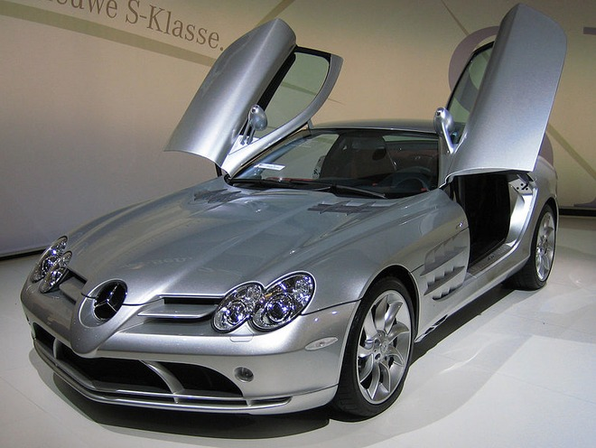

Trump heeft een eigen organistie namelijk The Trump Organization. Trump maakte plannen om het oude Penn Central voor $ 60 miljoen te kopen en te ontwikkelen zonder geld te verliezen. Later veranderde hij het failliete Commodore Hotel in het Grand Hyatt New York en creëerde hij The Trump Organization. New York plande om het Jacob K. Javits Convention Center te bouwen op grond, waarop Trump een optie had om het te mogen kopen. Trump schatte in dat zijn bedrijf het project voor $ 110 miljoen zou kunnen bouwen, maar de stad verwierp zijn aanbod en Trump moest uiteindelijk de makelaarskosten van de verkoop vergoeden. In 1980 werd gestart met de renovatie van de Wollman Rink, een schaatsbaan uit 1955 in Central Park. De renovatie zou 2,5 jaar duren, maar was in 1986 nog niet klaar. Trump nam het beheer van het project over zonder dat de stad ervoor hoefde te betalen en de renovatie eindigde drie maanden later en had $ 1,95 miljoen gekost, $ 750.000 minder dan begroot.
Donald Trump heeft een erg groot vermogen, namelijk 4 miljard Amerikaanse dollars. In april 2011, toen Trump overwoog zich kandidaat te stellen voor de presidentsverkiezingen van 2012, citeerde Politico een bron dicht bij Trump die verklaarde dat als Trump presidentskandidaat zou worden, zijn financiële verklaring zou laten zien dat zijn vermogen meer dan 7 miljard dollar bedroeg, dat hij 250 miljoen dollar aan contanten had en dat hij nauwelijks schulden had.[8] Hoewel Trump zich niet kandidaat stelde, publiceerde hij wel zijn financiën in een boek van hem. Hij beweerde dat zijn vermogen 7 miljard dollar bedroeg. Schattingen van Trumps vermogen schommelden over de jaren heen samen met de waarde van zijn vastgoed. In 2015 schatte Forbes zijn vermogen op $ 4,1 miljard. Op 16 juni 2015 publiceerde Trump zijn financiële verslag net voor zijn kandidaatstelling voor de presidentsverkiezingen. Daarin stond dat zijn vermogen ongeveer 9 miljard dollar bedroeg. In juli 2015 gaven toezichthouders van de verkiezingen nieuwe details over Trumps vermogen vrij: zijn bezittingen hadden een waarde van ruim $ 1,4 miljard, inclusief minstens $ 70 miljoen aan aandelen en hij had een schuld van minstens $ 265 miljoen.
